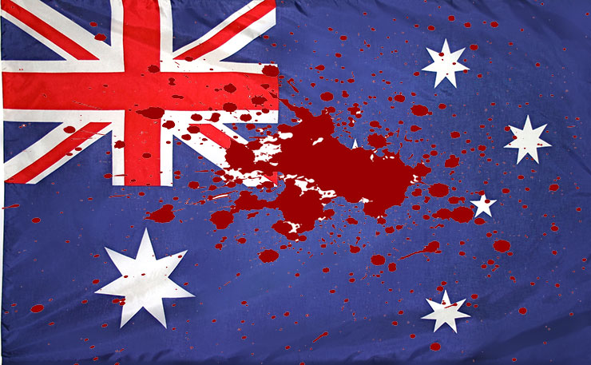

Summary
For thousands of years, Australia had been originally home to the Aborigines. When the British came over, many vicious fights happened between them and the Aborigines, which ended in death. However, the main reason was due to the British bringing over diseases, bunnies, and sheep, which worsened their environment. On top of this, the British became overbearing when it came to farming methods. They would try to enforce their ways onto the Aborigines, which also ended in cruel clashes. Some Aborigines, that trespassed over the colonists’ land would get shot on sight. Killings and massacres sadly ended 140 years later, leaving around 60,000 native aborigines. To this day only 30,000 people claim to have aborigines ancestors.
Lemkin’s idea of genocide is accurately portrayed the inhumane actions conducted by the European colonists. Lemkin points out that genocide has been done when destruction by mass killings is planned against a nation and an intent to annihilate a group is created. The colonists planned over 270 massacres during the years, creating a focus on killing as many aborigines as possible.
More about the Aboriginals
"An original inhabitant of Australia"
Australia is Earth’s driest and flattest continent, which makes it hard to farm and live. However, Aboriginal tribes have lived in peace with this type of environment for more than 30,000 years. At first, Aborigines, were mainly nomads, traveling in pods, hunting for animals. Women were the main hunters of the group as they brought in 80% of the food used to eat. Religious-wise, Aborigines feel connected to the land and rivers on a spiritual level. Celebrating through major rituals and harmonious gatherings. This is why the Aborigines felt internal destruction when being forced off the land, due to their strong link to the environment.
Click the image to view the interactive massacre map.
Genocide Breakdown
This section will breakdown the Methods of murder used in the genocide, a specification on various massacres, and more details about the general destruction that took place. The "Methods" tab describes 5 ways the Colonists treated the Aboriginal people. The "Massacres" tab first explains why and where they took place and a brief description of 2 attacks. And the last tab highlights the different weapons used from both sides, as well as the survival rate for the Aboriginal people, and the common diseases that killed them.
-
Bounty Hunting
Process of hunting and slaughtering the Aboriginies, same way as one would do with sheep or other animals.
-
Massacres
A deliberate and violent plan to kill and slaughter people.
-
Child Cruelty
Tactics like poisoning, shooting, and driving children were used to slaughter them.
-
Neck Chains
Used in a system to capture and detain Aborigines and remove them from their land. They would stay locked up for days and forced to walk 400km. The only way to remove is to go through a 10 minutes process of a hammer chiseling its way down your neck on a blacksmith anvil.
-
Suicide
Some of the Aboriginal people couldn’t take the constant fear of being shot or killed, so they committed suicide. They also felt that it was easier and less painful to kill themselves than go through beatings, shootings, rapings, or any other methods that were going to be used by the Colonists.
-
Where the massacres took place:
These violent attacks happened all over Australia. Currently, researchers are using diaries, newspapers, reports, and other evidence, to figure out the times and dates. In July of 2017, 150 massacres were accounted for resulting in more than 6,000 deaths. This research doesn’t include the smaller massacres.
-
Reasons why massacres took place:
-Revenge for murder
-Thievery
-Battle for land
-Not being able to speak the same language
-Fear of Attacks
-Sexual Pleasure -
The Native Mounted Police
Created to kill the Aboriginal families and facilitate thievery and trespassing. Historians think that the Police troops killed around 24,000 -41,000 Aboriginal people. These troops were mostly made up of Aboriginal men/boys, that volunteered to fight in order to save themselves, and their families.
-
The Waterloo Massacre
This attack happened on Waterloo Creek. Major James Numm, policeman, and soldiers were stationed to suppress the Aboriginal People. A mass number of acts of brutality were conducted, resulting in 210 Aboriginies dead, making. it the largest single massacre in Australian history.
-
The Coniston Massacre
This ambush took place in Baxters Well, in 1928, due to a revenge plan against a single aboriginal man. However, the Constable ended up murdering around 170 more Aboriginal people. 90 years later the Police Commissioner apologized for the deadly misconduct that occurred there.
-
Aborigines (Weapons)
Clubs
Spears
Hatchet -
Colonists (Weapons)
Fight Swords, Pistols, Muskets, Double-barrelled Shotguns, Rifles, Carbines, and Bayonets
-
Aboriginies survivors
Only 24% of the original Aboriginies survived the 140 years of torture.
-
Major Epidemic Issue
-Smallpox
-Syphilis
-Tuberculosis
-Influenza
-Measles
European Perpetrators
Unlike other genocides, there wasn't a powerful leader to dictate the actions of violence against the Aborigines. However, during the 140 years of mass murders and destruction, these 2 men played an important role for the colonists.
Survivor Stories
To the right, you will see an interface of a website that shows 43 testimonials of the genocide survivors. They talk in-depth about their experience and fears during those times. In addition to speaking about the "Stolen Generations" phrase and the lasting effects of the holocaust.
Published Works
Down below are some of the best visualizations of the Australian Genocide. The first row is full of captivating Indigenous films that moved nations. In the second row, you will find award-winning books that captivate the realism of the genocide. And the last row is filled with stunning documentaries which encompass every small detail of the violence.
Movies
Books
Documentaries
What can you do to help?
If you're interested in helping the Aboriginal community out, here are 3 ways to get started!
This foundation was created to help Aboriginies cope with their trauma, find families, and heal peacefully.
-Attend local Aboriginal events in the community
-Connect and contact Aboriginal elders and teenagers
-Ask them about their past, be gentle and thoughtful
-Get involved! Join groups, volunteer at celebrations, and offer your skills